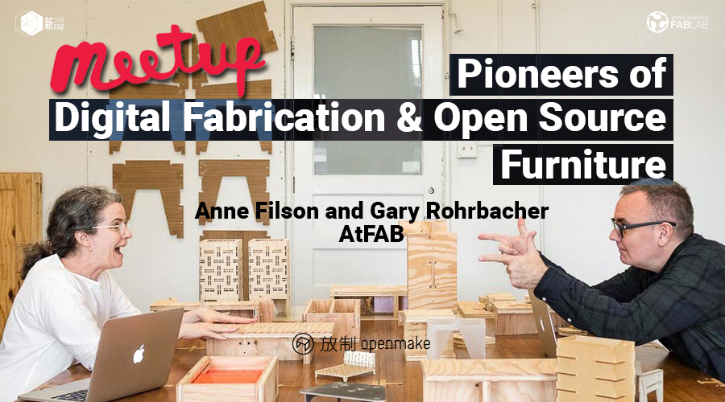
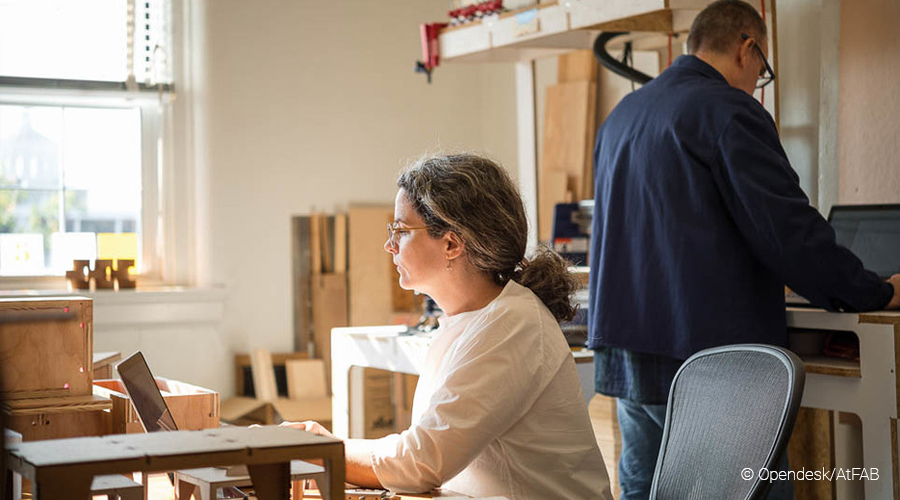
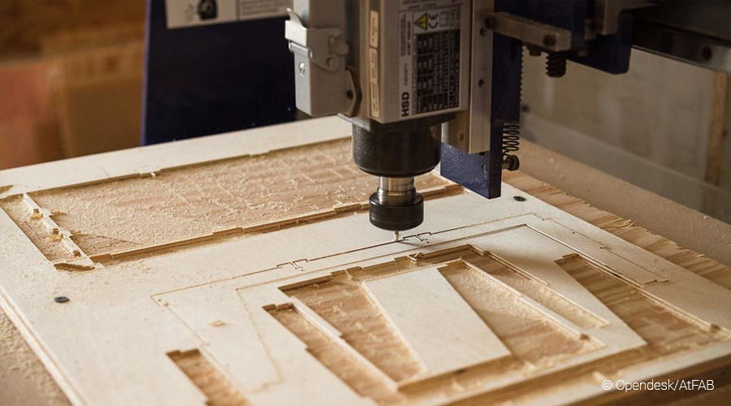
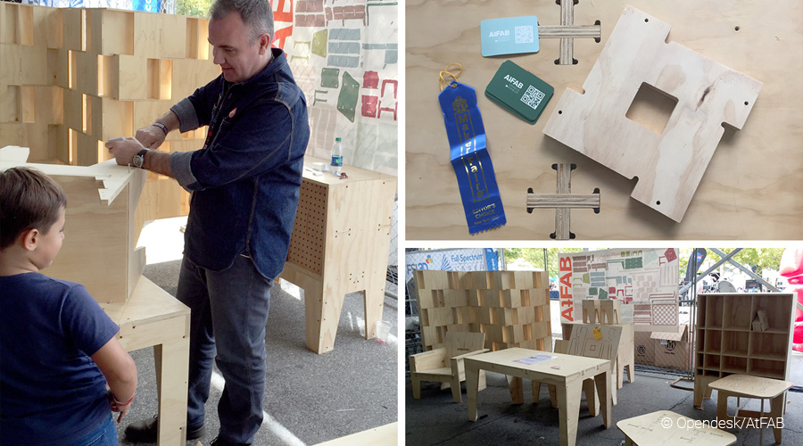
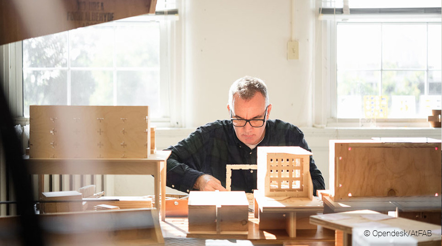

MEET UP
Pioneers of Digital Fabrication & Open Source Furniture: Anne Filson and Gary Rohrbacher (AtFAB/Opendesk) | 数字制作与开源家具的先锋

When:Tuesday, January 9, from 7pm to 9pm
Where: Xinfab - Kangding East Rd, Lane 45, Building no.5, Room 102, Jing'an District
Price:Free for members ***Not a member or your membership expired? Either become a member, renew your membership or get a one day membership (30 RMB) - No need to prepay, just show up!***
Join Xinfab and Openmake on Tuesday, January 9 at 7pm, for a talk about open source design and digital fabrication with designers Anne Filson and Gary Rohrbacher from AtFAB. They are going to explore how the combination of digital fabrication and open source democratizes design by creating a reality where consumers can buy directly from makers.
AtFAB Anne and Gary are licensed designers for Openmake. Founded in 2016, Openmake is the Chinese counterpart of British open source furniture company Opendesk. They aim to provide innovative, sustainable design furniture worldwide, all using greener materials and localized production through digital design and digital processing technologies.
AtFAB is a project co-founded by architects Anne Filson and Gary Rohrbacher. Through AtFAB, Anne and Gary endeavor to design simple, durable, modern objects that are beautiful in appearance and in how they are designed, manufactured, and delivered. They started AtFAB to design things specifically for digital CNC fabrication tools and networked manufacturing, in order to provoke a new way of designing, making, and buying things. Their line of furniture began as a small, open source research project within their architecture firm. AtFAB designs and tests furniture objects in their own studio, and post their design files for others to download, customize, and cut with CNC machines.
Since then, their furniture designs have been downloaded over ten-thousand times, locally fabricated by a global community of makers, and commissioned by private clients. They’ve published, presented, and exhibited AtFAB in a wide range of international venues, and recently saw the AtFAB 5-30 Minute Chair acquired by France’s Centre National des Arts Plastiques permanent collection. Called an “IKEA Disruptor” and “iTunes for Furniture,” AtFAB has been featured on PBS NewsHour and NPR, and published in Scientific American, The Economist, The Atlantic, MAKE Magazine, as well as numerous architecture and design publications.
///////////////////////////////////
Please follow us on Meetup to keep posted on this and other meetups. Also, that's where you'll be informed if anything changes!
Photos ©Opendesk/AtFAB




时间：1月9日星期六从下午7：00到9:00
地点： 新Fab- 静安区康定东路45弄5号102室
价格： 会员免费 ***不是会员或您的会员过期？你可以成为会员，更新会员资格或获得一天会员资格（30元） - 无需预付，只需出现！***
1月9日星期二下午7点，加入我们，与AtFAB的设计师Anne Filson和Gary Rohrbacher一起讨论开源设计和数字制作。他们将探索如何数字制造和开源的结合创建民主化设计的。一个消费者可以从制造商直接购买的.
AtFAB Anne和Gary是放制openmake的许可设计者。 放制openmake成立于2016年，是英国开源家具公司Opendesk的中国公司。他们的目标是在全球范围内提供创新的可持续设计家具，通过数字化设计和数字处理技术，使用更环保的材料和本地化生产。
AtFAB是由建筑师Anne Filson和Gary Rohrbacher共同创立的一个项目。通过AtFAB，Anne和Gary努力设计出外形美观，设计，制造和交付方式简单，耐用，现代的物体。他们启动了AtFAB，专门为数字CNC制造工具和网络化制造设计了一些东西，以激发设计，制造和购买物品的新方式。他们的家具系列在他们的建筑公司内开始作为一个小型的开源研究项目。 AtFAB在他们自己的工作室里设计和测试家具，并将他们的设计文件发布给其他人使用数控机床进行下载，定制和切割。
从那以后，他们的家具设计被下载了一万多次，由全球制造商共同编造，并由私人客户委托。他们在各种国际场馆出版，展示和展出了AtFAB，最近又看到了法国国家艺术品中心永久收藏的AtFAB 5-30 Minutes Chair。被称为“IKEA Disruptor”和“iTunes for Furniture”的AtFAB已经在PBS NewsHour和NPR上刊登，并在Scientific American，The Economist，The Atlantic，MAKE Magazine以及众多的建筑和设计出版物上发表。
///////////////////////////////////